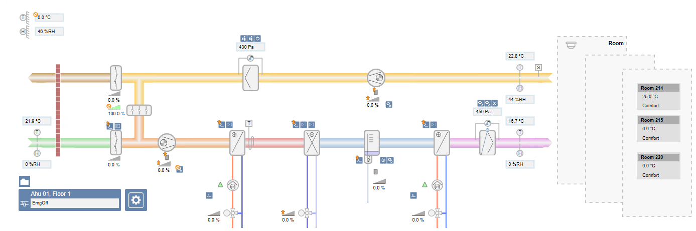
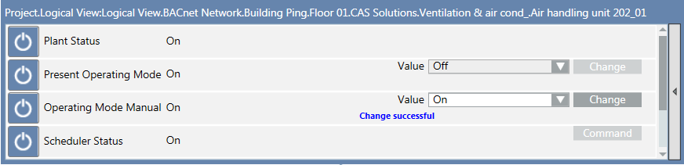
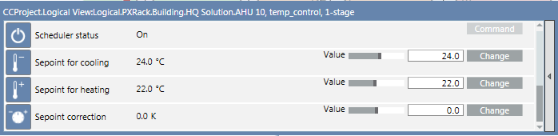

Air Handling Unit
Central air handling unit with its main components:
- Pre-heater
- Cooling coil
- Humidifier
- Re-heater
- Heat recovery with dampers
- Single-room operation

Operating an Air Handling Unit
Scenario: The air handling unit plant has to be set to another status (On, Off, Step 1, Step 2 or Automatic) because of a maintenance interval or longer occupation time in the building.
- In System Browser, select Graphics.
- Click
 for the desired graphics page.
for the desired graphics page. - The selected graphics page opens.
- Select the operator symbol for the air handling unit.
NOTE: The operation mode of a plant cannot be changed if the plant’s operation is dependent on measured temperatures. - Right-click and select Show Status and Commands.
- Select the Operating Mode Manual property.
a. In the drop-down list, select Off, On or Auto.
b. Click Change. - The new state is displayed under Plant Status.
- Click
 to close the pane.
to close the pane.

Changing an Air Handling Unit Setpoint
Scenario: Rooms are too cold. The heating setpoint needs to be set to a higher value.

NOTE:
Depending on your plant configuration, the setpoints for cooling, humidification, de-humidification or air pressure can also be changed.
- In System Browser, select Graphics.
- Click for the desired graphics page.
- The selected graphics page opens.
- Select the operator symbol for the air handling unit.
NOTE: The operation settings of a plant cannot be changed if the plant’s operation is dependent on measured temperatures. - Right-click and select Show Status and Commands.
- Select the Setpoint for Heating property.
a. Enter the new value.
b. Click Change. - The new setpoint displays.
- Click to close the pane.
